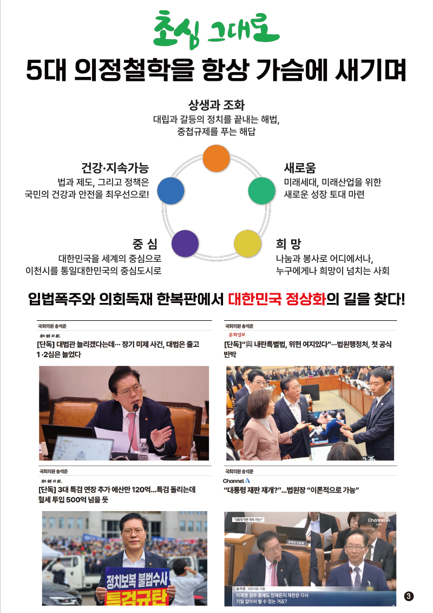
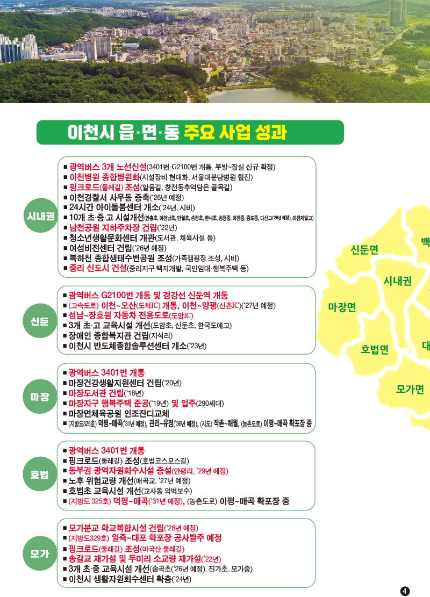
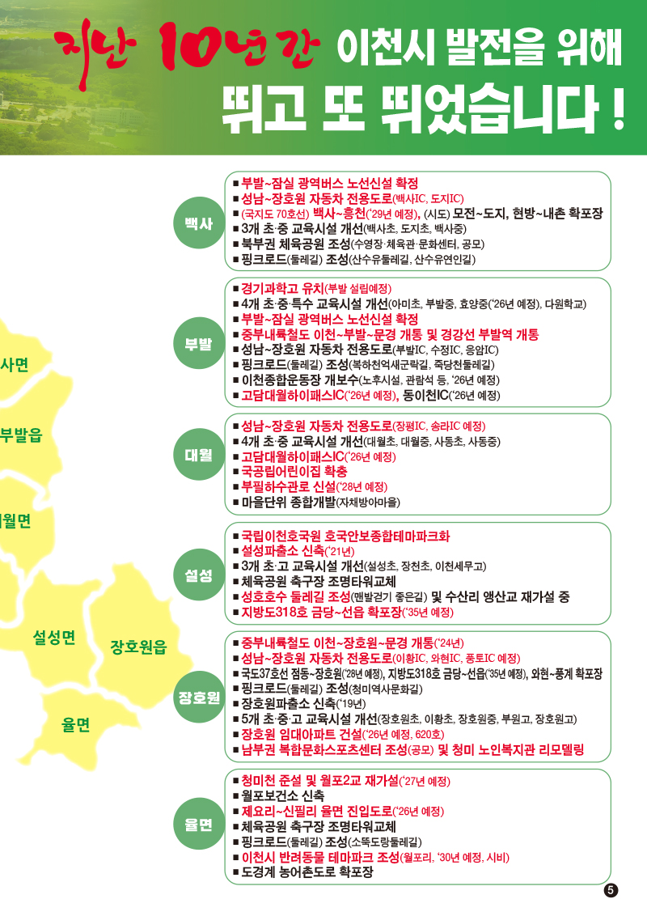
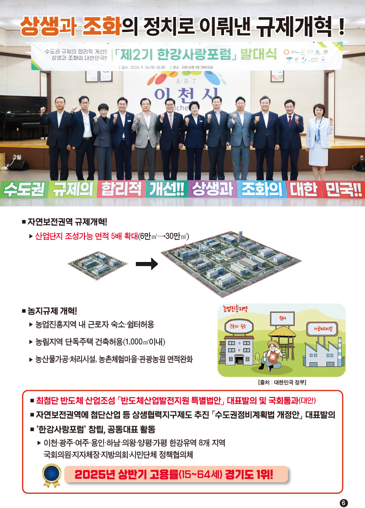
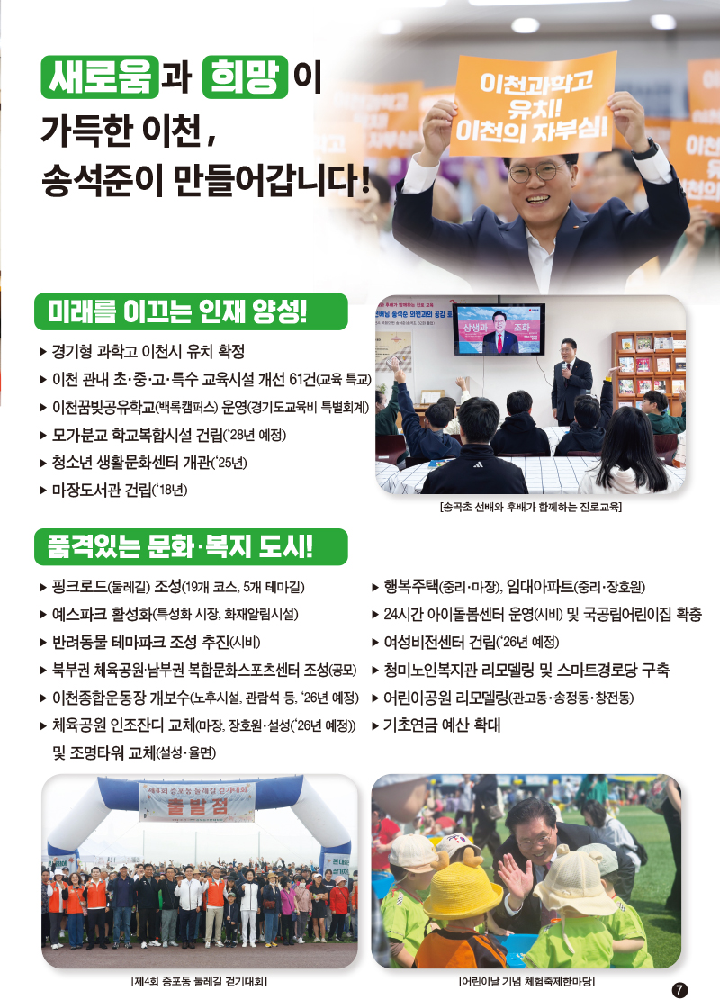
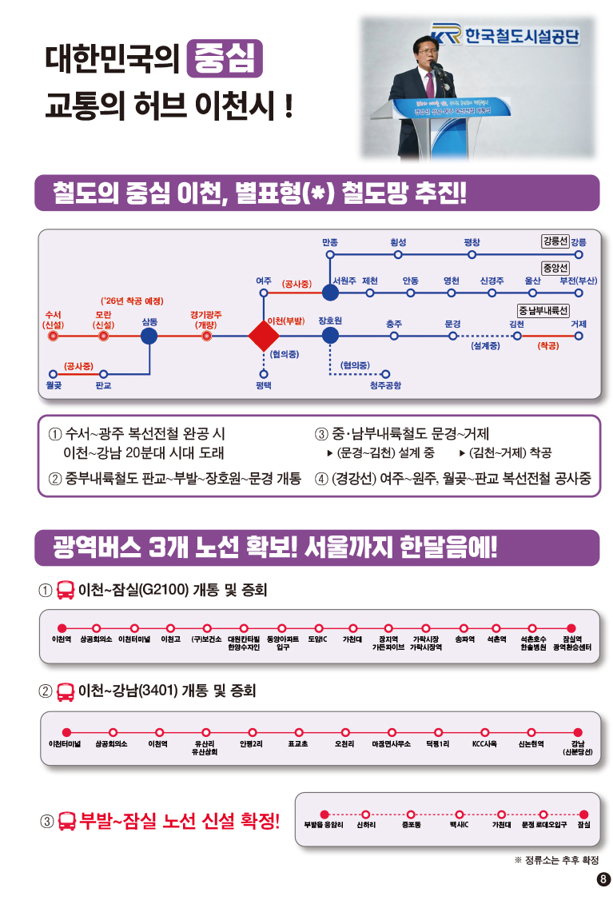
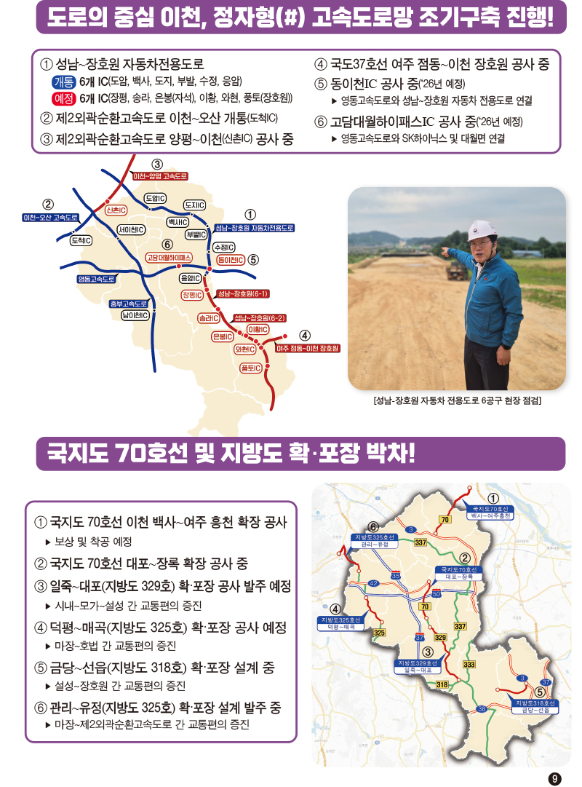
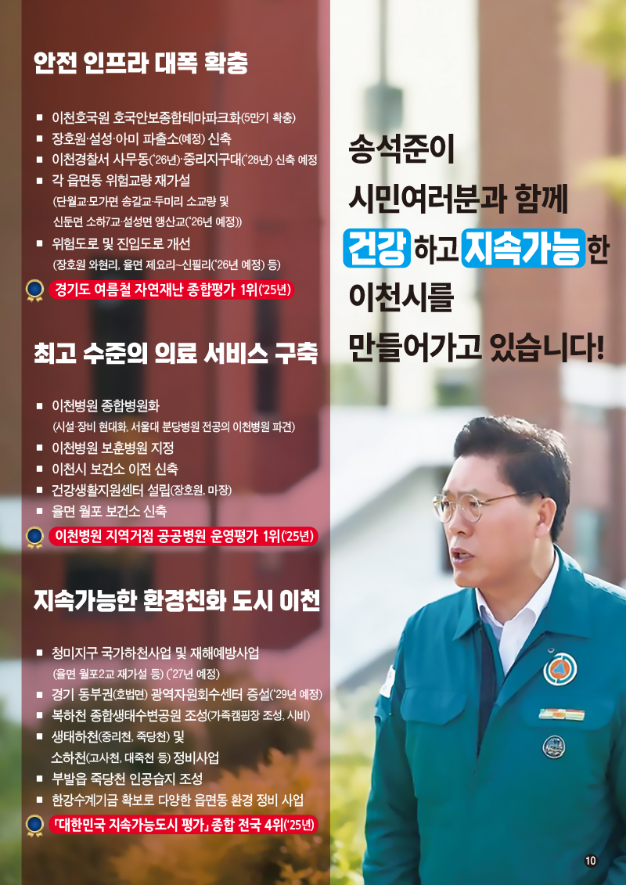

의정보고서








보도자료
각 카드를 클릭하면 해당 기사로 연결됩니다
송석준 “이천시 2026년 환경 관련 국비 400억 확보” (‘26.01.05.
보도)
송석준 의원, 이천시 교통 인프라 국비 1009억 확보 (’26.01.12.
보도)
이천시, 장호원읍 생활나눔복합센터 건립 착공식 개최 (’26.01.29
보도)
송석준, “장호원‧설성 체육공원 축구장 인조잔디 교체에 총 8억원
확보" (‘26.01.02. 보도)
송석준 “석고대죄는 정청래가 해야…언어도단·적반하장”
[정치시그널] (‘26.01.21)
송석준 “한동훈 제명하면 국민의힘 분열해 자멸할 것…지선에서
승리할 수 있는 역할 한동훈이 맡아야” [세상의 모든 정보
윤인구입니다] (‘26.01.29)